В начале каждого матча команды получают в распоряжение набор построек, появляющихся в заданных позициях. Обе фракции имеют одинаковый набор, отличающийся лишь визуально.
Помимо командных, существует несколько нейтральных построек, разбросанных по карте, которые могут быть завоёваны или использованы обеими командами.
Линейные крипы
тип крипов, неподконтрольных никакому игроку. Они появляются для обеих фракций каждые 30 секунд возле их казарм на каждой линии
Типы
Есть 4 типа линейных крипов: крипы-мечники, крипы-маги, крипы-знаменосцы и катапульты. Катапульты появляются каждую десятую волну.
Уничтожение вражеских казарм позволит получить уничтожившей команде суперкрипов. Суперкрипы являются сильными версиями обычных линейных крипов, за убийство которых даётся меньше золота и опыта.
| Юнит | Вид | Здоровье | Броня | Скорость передвижения | Урон | Скорость атаки | Дальность атаки | Обзор | Награда | Опыт | Дополнительно |
|---|---|---|---|---|---|---|---|---|---|---|---|
| Катапульта |
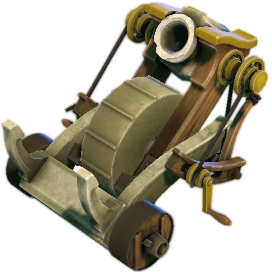
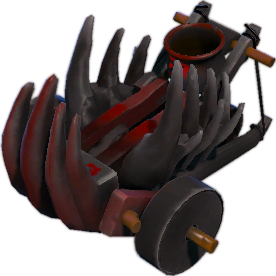
|
935 | 0 | 325 | 35-46 | 3 | 690 | 750 | 59-72 | 88 |
Сопротивление магии: 80%
Анимация атаки: 0,7+2
|
| Мегакатапульта |
|
935 | 0 | 325 | 51-62 | 3 | 690 | 750 | 59-72 | 88 |
Сопротивление магии: 80%
Анимация атаки: 0,7+2
|
| Суперкатапульта |
|
935 | 0 | 325 | 51-62 | 3 | 690 | 750 | 59-72 | 88 |
Сопротивление магии: 80%
Анимация атаки: 0,7+2
|
| Крип-маг |
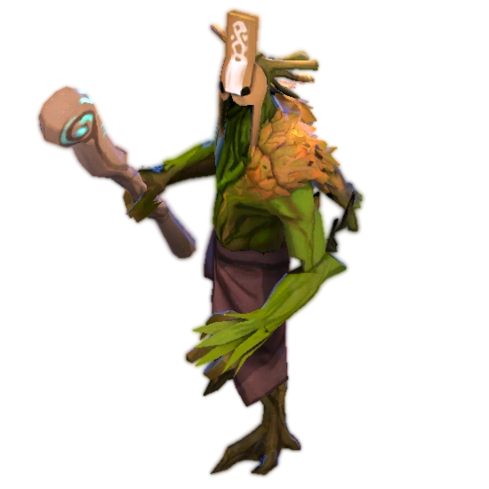
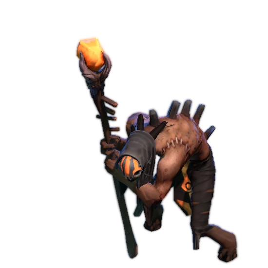
|
300 | 0 | 325 | 41-46 | 1 | 500 | 750 | 43-52 | 69 |
Мана: 500
Сопротивление магии: 0%
Анимация атаки: 0,5+0,3
|
| Суперкрип-маг |
|
475 | 1 | 325 | 41-46 | 1 | 500 | 750 | 19-25 | 22 |
Мана: 500
Сопротивление магии: 0%
Анимация атаки: 0,5+0,3
|
| Крип-знаменосец |
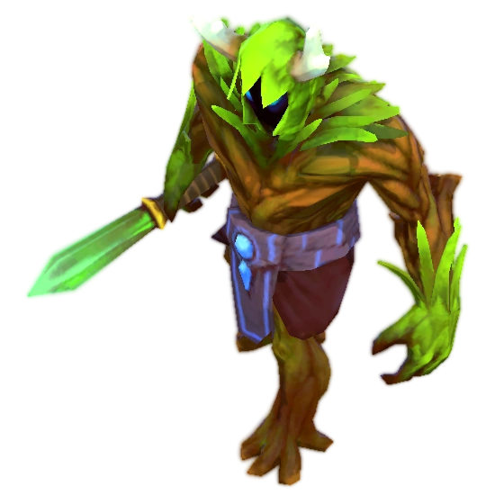
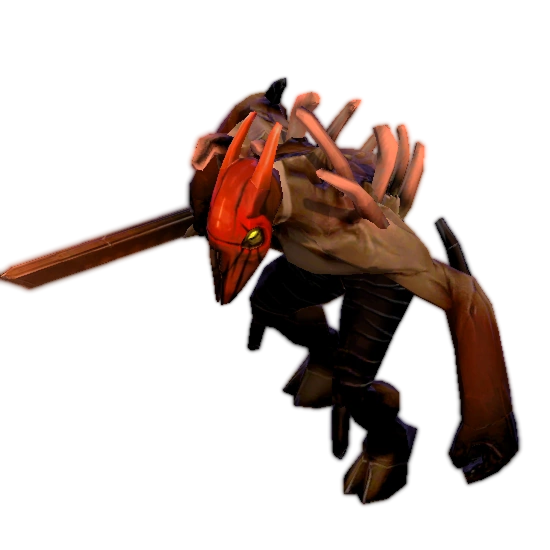
|
550 | 2 | 325 | 19-23 | 1 | 100 | 750 | 34-39 | 57 |
Сопротивление магии: 40%
Анимация атаки: 0,467+0,533
|
| Крип-мечник |
|
700 | 3 | 325 | 19-23 | 1 | 100 | 750 | 34-39 | 57 |
Сопротивление магии: 0%
Анимация атаки: 0,467+0,533
|
| Суперкрип-знаменосец |
|
700 | 3 | 325 | 36-44 | 1 | 100 | 750 | 20-26 | 25 |
Сопротивление магии: 40%
Анимация атаки: 0,467+0,533
|
| Суперкрип-мечник |
|
700 | 3 | 325 | 36-44 | 1 | 100 | 750 | 20-26 | 25 |
Сопротивление магии: 0%
Анимация атаки: 0,467+0,533
|
| Мегакрип-маг |
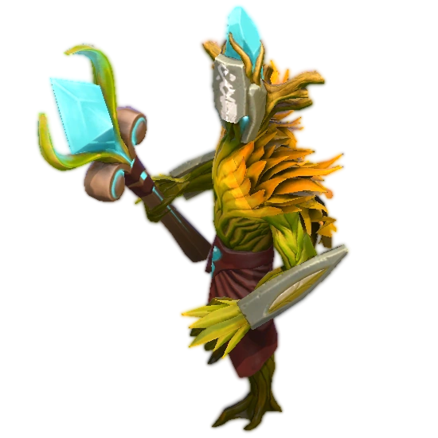
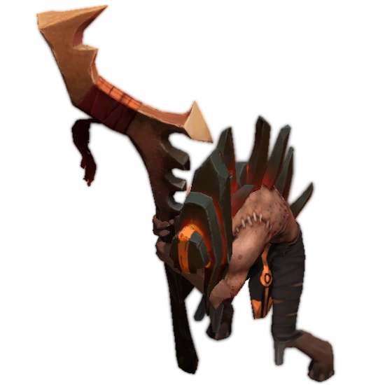
|
1015 | 1 | 325 | 131-136 | 1 | 500 | 750 | 19-25 | 22 |
Мана: 500
Сопротивление магии: 0%
Анимация атаки: 0,5+0,3
|
| Мегакрип-знаменосец |
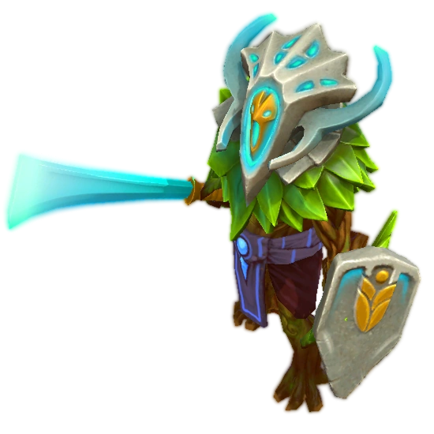
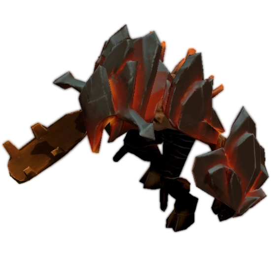
|
1270 | 3 | 325 | 96-104 | 1 | 100 | 750 | 20-26 | 25 |
Сопротивление магии: 40%
Анимация атаки: 0,467+0,533
|
| Мегакрип-мечник |
|
1270 | 3 | 325 | 96-104 | 1 | 100 | 750 | 20-26 | 25 |
Сопротивление магии: 0%
Анимация атаки: 0,467+0,533
|
Появление
Первый раз появляются в 00:00, сразу после звука игрового рога. После этого, каждые 30 секунд. Катапульты начинают появляться на 11-й волне, и после каждые 10 волн. Это значит что катапульты появляются каждые 5 минут, впервые появившись на 5:00.
Изначально, волна крипов состоит из 3 крипов-мечников, 1 крипа-мага и 1 катапульты каждую 10 волну. Центральная линия начинает с 4-х крипов-мечников.
С ходом битвы количество крипов в одной волне увеличивается
33-я волна и следующие (16:00): Боковые линии получают +1 крипа-мечника. Общее количество крипов-мечников теперь 4 для всех линий.
63-я волна и следующие (31:00): Все линии получают +1 крипа-мечника. Общее количество крипов-мечников теперь 5 для всех линий.
81-я волна и следующие (41:00): Все линии получают +1 крипа-мага и +1 катапульту. Общее количество крипов-магов и катапульт теперь 2 для всех линий.
93-я волна и следующие (46:00): Все линии получают +1 крипа-мечника. Общее количество крипов-мечников теперь 6 для всех линий.
Линейные крипы появляются ближе к казармам линий, но приспособлены к своей линии так, чтобы они могли встретиться в определенной точке каждой линии, если они не будут прерваны или отвлечены.
Места появления не изменяются в течении матча. Появление крипов в области случайное, нет никакого порядка между юнитами. Это значит что крип-маг или катапульта могут появиться спереди или сзади крипов-мечников.
Характеристики
Для первых 10 волн (до 5:00), крипы на нижней линии Света и верхней линии Тьмы имеют усиленную скорость передвижения на 30 %, и перемещаются они со скоростью 422.5. На стороне Света, усиление длится 15 секунд, исчезая на половине пути между 1-й и 2-й башнями. На стороне Тьмы, усиление длится 8 секунд, исчезая после достижения 2-й башни.
В то же время, верхняя линия Света и нижняя линия Тьмы замедлены на 35 %, и перемещаются они со скоростью 211.25. На стороне Света, это замедление длится 8 секунд, исчезая после достижения символа Света между двумя подьемами. На стороне Тьмы, замедление длится 22 секунды, исчезая после достижения половины пути между 1-й и 2-й башнями.
11-я и последующие волны (7:30 и последующие) передвигаются без усилений и замедлений со скоростью 325. На центральной линии всегда перемещаются со скоростью 325.
Каждые 7 минут 30 секунд, крипы-мечники и крипы-маги получают бонус к постоянному здоровью и урону, также как и увеличивается награда за их убийство.
Крипы-мечники: +12 к здоровью, +1 к урону, +1 к награде за убийство
Суперкрипы-мечники: +19 к здоровью, +2 к урону, +1 к награде за убийство
Крипы-маги: +12 к здоровью, +2 к урону, +1 к награде за убийство
Суперкрипы-маги: +18 к здоровью, +3 к урону, +1 к награде за убийство
Катапульты получают лишь одно улучшение, и это +16 к урону после уничтожения вражеских казарм магов на линии этой катапульты.
Нейтральные крипы
тип крипов, неподконтрольных никакому игроку. Они появляются в небольших лагерях, разбросанных по лесу и по краям всей карты
Типы
Есть много разных типов нейтральных крипов, которые появляются небольшими группами внутри лагерей по лесу.
Эти лагеря разделены на малые, средние, крупные и лагеря древних крипов.
Малые лагеря. За них можно получить совсем немного золота и опыта, они наносят сниженный урон по героям, но увеличенный по крипам, имеют малый запас здоровья, что делает их легкой целью для убийства любым героем в любое время игры.
| Расположение лагерей | Крипы | Название лагеря | Всего золота | Всего опыта | Всего здоровья | |||
|---|---|---|---|---|---|---|---|---|
| По умолчанию | Стакнутый | Для стакнувшего | По умолчанию | Стакнутый | ||||
|
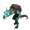
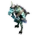
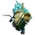
|
Лагерь кобольдов | 50–60 | 43–51 | 15–18 | 89 | 76 | 1445 | |
|
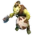
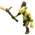
|
Лагерь холмовых троллей | 58–64 | 49–54 | 17–19 | 84 | 71 | 1450 | |
|
|
Лагерь холмовых троллей и кобольда-бригадира | 59–65 | 50–55 | 18–20 | 86 | 73 | 1400 | |
|
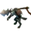
|
Лагерь воулов-убийц | 54–60 | 46–51 | 16–18 | 90 | 77 | 1200 | |
|
|
Лагерь призраков | 53–57 | 45–48 | 16–17 | 94 | 80 | 1300 | |
|
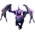
|
Лагерь гарпий | 59–65 | 50–55 | 18–20 | 94 | 80 | 1300 | |
| Всего в среднем | 17% шанс появления в первый раз | 20% шанс появления в следующие разы | 56–62 | 48–53 | 17–19 | 90 | 77 | 1349 |
Средние лагеря. Относительно слабые лагеря, но сильнее чем малые. За них можно получить немного больше золота и опыта, они наносят небольшой урон и имеют больше здоровья. С некоторыми из них можно разделаться раньше и легче, другие же могут быть для этого слишком сильными.
| Расположение лагерей | Крипы | Название лагеря | Всего золота | Всего опыта | Всего здоровья | |||
|---|---|---|---|---|---|---|---|---|
| По умолчанию | Стакнутый | Для стакнувшего | По умолчанию | Стакнутый | ||||
|
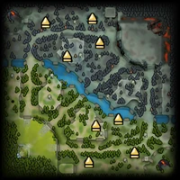
|
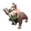
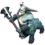
|
Лагерь кентавров | 74-82 | 63-70 | 22-25 | 122 | 104 | 1450 |
|
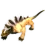
|
Лагерь волков | 74–84 | 63-71 | 22-25 | 140 | 119 | 1600 | |
|
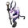
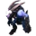
|
Лагерь хсатиров | 72-84 | 61-71 | 22-25 | 140 | 119 | 1800 | |
|
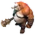
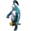
|
Лагерь огров | 78-90 | 66-77 | 23-27 | 112 | 95 | 2200 | |
|
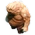
|
Лагерь големов | 112-148 | 100-133 | 24-30 | 208 | 188 | 2500 | |
| Всего в среднем | 20% шанс появления в первый раз | 25% шанс появления в следующие разы | 82-98 | 71-84 | 23-26 | 144 | 125 | 1910 |
Крупные лагеря. Сильнейшие из обычных лагерей. Награда в виде золота и опыта за лагерь практически на уровне с наградой за волну линейных крипов. Они состоят из сильных крипов с мощными способностями и их очень сложно убить на ранней стадии игры.
| Расположение лагерей | Крипы | Название лагеря | Всего золота | Всего опыта | Всего здоровья | |||
|---|---|---|---|---|---|---|---|---|
| По умолчанию | Стакнутый | Для стакнувшего | По умолчанию | Стакнутый | ||||
|
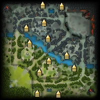
|
|
Крупный лагерь кентавров | 92-102 | 78-87 | 28-31 | 154 | 131 | 1800 |
|
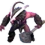
|
Крупный лагерь сатиров | 98-110 | 83-94 | 29-33 | 160 | 136 | 2000 | |
|
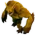
 |
Лагерь медведемонов | 96-108 | 82-92 | 29–32 | 156 | 133 | 1650 | |
|
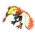
|
Лагерь дикокрылов | 96-106 | 82-90 | 29–32 | 142 | 121 | 1650 | |
|
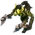
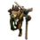
|
Лагерь троллей | 82-96 | 70-82 | 25-29 | 174 | 148 | 2100 | |
|
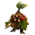
|
Лагерь сосновых налетчиков | 100-104 | 85-88 | 30-31 | 152 | 129 | 1700 | |
| Всего в среднем | 17% шанс появления в первый раз | 20% шанс появления в следующие разы | 94-107 | 80-91 | 28-31 | 158 | 135 | 1942 |
Лагеря древних. В отличии от обычных крипов, эти крипы имеют особенный тип существа, древний, который делает их в основном невосприимчивыми к многим заклинаниям, например превращающим заклинаниям. С ними почти невозможно сражаться на ранней стадии игры, и для некоторых героев даже в поздней игре. Они имеют очень много здоровья, наносят много урона и владеют сильными аурами. Они также обладают небольшим сопротивлением к магии, что затрудняет их уничтожение с помощью заклинаний наносящих магический урон.
| Расположение лагерей | Крипы | Название лагеря | Всего золота | Всего опыта | Всего здоровья | |||
|---|---|---|---|---|---|---|---|---|
| По умолчанию | Стакнутый | Для стакнувшего | По умолчанию | Стакнутый | ||||
|
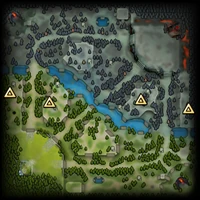
|
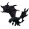
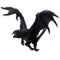
|
Лагерь драконов | 156-172 | 133-146 | 47-52 | 314 | 267 | 3900 |
|
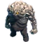
|
Крупный лагерь големов | 156-172 | 133-146 | 47-52 | 314 | 267 | 3565 | |
|
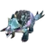
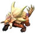
|
Лагерь ящериц | 156-172 | 133-146 | 47-52 | 314 | 267 | 3400 | |
|
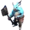
|
Промерзший лагерь | 156-172 | 133-146 | 47-52 | 314 | 267 | 3300 | |
| Всего в среднем | 25% шанс появления в первый раз | 33% шанс появления в следующие разы | 156-172 | 133-146 | 47-52 | 314 | 267 | 3541 |
Появление
Начинают появляться в 1:00 по игровому времени и после этого появляются каждую минуту (02:00, 03:00, 04:00, и т. д.). Лагерь крипов не может повторить появление одного того же набора нейтральных крипов подряд.
В лагере не появятся нейтральные крипы если в зоне появления лагеря будут существа.
Возможно сделать так чтобы внутри лагеря было много нейтральных крипов. Этого можно достигнуть спровоцировав уже существующих крипов и заставив их покинуть зону появления. Если зона будет пуста в следующую минутную отметку, в этом лагере появится новая группа нейтральных крипов. Спровоцированные ранее крипы возвратятся в свой лагерь, теперь лагерь состоит из 2 групп нейтральных крипов.
Зоны появления можно увидеть зажав горячую клавишу Alt.
Характеристики
Нейтральные крипы увеличивают свои характеристики с течением времени.
Каждый интервал улучшения происходит каждые 7,5 мин. после звучания игрового рога. Мгновенно улучшает всех существующих нейтральных крипов при каждом интервале улучшения. Также уровень некоторых способностей нейтральных крипов повышается каждые 15 минут до двух раз после горна начала игры.
Макс. стаков: 30
Интервал улучшения: 450
Доп. здоровье за интервал: 30
Доп. броня за интервал: 0,5
Доп. базовый урон от атаки за интервал: 3
Доп. скорость атаки за интервал: 5
Увеличение награды в золоте за интервал: 1
Увеличение награды в опыте за интервал: 5
Рошан
крип, который в начале игры появляется в своем нижнем логове на центральной реке и при смене времени суток переходит в логово на верхней части реки
Только несколько героев могут справиться с ним в одиночку в средней игре. Даже в поздней игре большинству героев трудно сражаться с ним один на один, так как Рошан становится сильнее с течением времени.
Обладает 4 способностями:
Strength of the Immortal
Уменьшение урона от иллюзий: 80%
Здоровья варда в урон: 100%
Радиус: 1
Интервал в минутах: 1
Бонусная броня за интервал: 0,375
Бонусное макс. здоровье за интервал: 115
Бонусный урон от атаки за интервал: 6
Прирост опыта за убийство за интервал: 20
Длительность задержки ауры: 0,5
Первый бонус к броне даётся при появлении первой волны крипов, затем — каждую минуту. Бонусы не пропадают после смерти и продолжают увеличиваться даже когда он мёртв.
Атаки иллюзий наносят на 80% меньше урона Рошану, однако, если они могут использовать способности, то урон от заклинаний будет полным.
Защита от способностей
Рошан блокирует одно направленное заклинание каждые 15 секунд
Не блокирует заклинания, применяемые союзниками.
Оглушающий удар
Рошан может оглушить при атаке.
Шанс срабатывания: 15%
Урон: 50
Длительность оглушения: 1,65
Хлопок
Радиус эффекта: 350
Начальный урон: 70
Интервал в минутах: 1
Дополнительный урон за интервал: 10
Замедление скорости передвижения: 50%
Замедление скорости атаки: 50
Длительность на героях: 2
Длительность на не-героях: 4
Рошан использует Хлопок только когда рядом с ним 3 или более вражеских существ. При этом, если в его радиусе оказались 3 врагов, то Рошан начнет постоянно использовать способность после атаки по нему независимо от числа врагов (до его следующего возрождения). Урон увеличивается на 10 каждую минуту с момента первого появления крипов. Первое увеличение произойдет с появлением первой волны крипов.
Каждый игрок команды, убившей Рошана, получает 135 золота, тот, кто лично добил Рошана, получит 200-900. Опыт разделяется на команду, убившую Рошана.
Помимо этого, выпадает несколько мощных расходуемых предметов. Они могут быть подобраны любым героем вне зависимости от того, каким игроком или командой был убит Рошан:
Aegis of the Immortal:
Выпадает при каждой смерти Рошана. Рошан забирает этот предмет при возрождении, где бы он не находился. Не может быть передан или выброшен, если предмет был подобран. Не может быть продан. Поднятие или уничтожение предмета отобразится в виде уведомления обеим командам.
Cheese:
Выпадает после второй смерти. Полностью передаваемый предмет. Может быть продан за 500 первым игроком, который подобрал предмет.
Aghanim's Blessing:
После третьей смерти может выпасть этот предмет, если Рошан был убит на стороне Света, либо Refresher Shard. Всегда выпадает после четвертой смерти. Полностью передаваемый предмет. Не может быть продан.
Контроль крипов
Следующие способности могут манипулировать крипами или их принадлежностью с целью получения контроля над ними. Игроки могут использовать способности подконтрольных им крипов:
Chen — Holy Persuasion
Enchantress — Enchant
Helm of the Dominator — Dominate
Helm of the Overlord — Dominate
Lifestealer — Infest